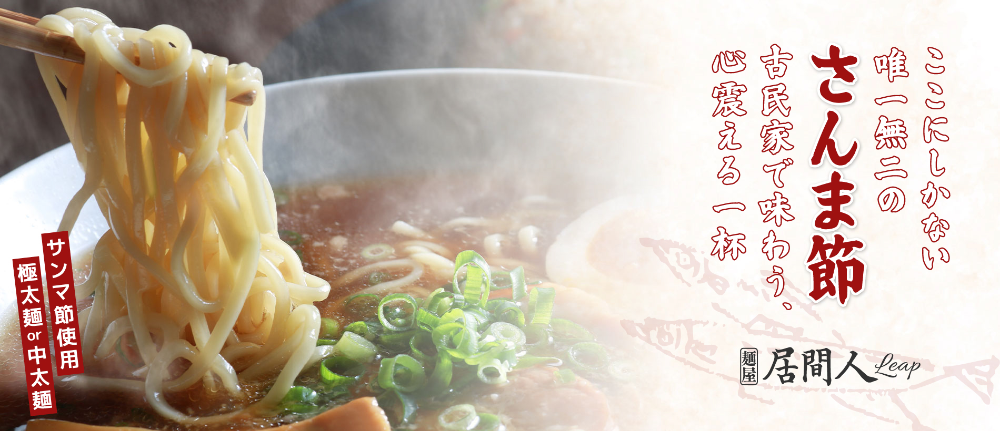

山形県天童市に店を構える「麺屋 居間人Leap」は、
職人のこだわりが詰まった一杯で、地元の方から
観光客まで多くの方に愛されるラーメン店です。
私たちの自慢は、希少な「さんま節」を贅沢に使用した、
旨みたっぷりの味噌ラーメン。
魚介の豊かな風味と味噌のコクが絶妙に調和したスープは、
最後の一滴まで飲み干したくなる深い味わいに仕上げています。
古民家を改装した落ち着きのある店内には、
お一人様はもちろん、ご家族連れでもゆったり過ごせる
温かな時間が流れています。
ランチタイムには、圧倒的な満足感と
コストパフォーマンスをお約束。
「また来たい」と思っていただける、
真心込めた一杯をぜひご賞味ください。
もちもちとした食感の極太麺か、スープによく絡む中太麺からお好みのスタイルを選択可能。
器を覆い尽くすたっぷりの野菜、口の中でとろける厚切りチャーシュー、そして絶妙な半熟加減の煮卵が鎮座し、見た目も食べごたえも満点です。
味噌・塩・醤油の3種類から選べるスープは、どれも素材の旨味が凝縮された深い味わい。
卓上には特製辛味噌やニンニクチップ、お酢などの味変アイテムが完備されており、食べ進めるごとに自分好みの味へとカスタマイズできます。
熱々の丼で提供されるため、最後まで温度を損なうことなく堪能できるのも魅力です。
どこか懐かしさを感じる古民家を改装した店内は、落ち着いて食事を楽しめる最高のロケーションです。
山形県産米「はえぬき」を使用したライスや、名物の「さんま節粉ふりかけ」付きのご飯など、サイドメニューも充実。
ボリューム満点のラーメンとともに、お腹も心もこれ以上ない満足感に満たされます。
| 屋号 | 麺屋 居間人Leap |
|---|---|
| 所在地 | 〒994-0061 山形県天童市東芳賀２丁目８−３６ |
| 電話番号 | 050-5385-5242 |
| 営業時間 | 11:00 ～ 21:00 |
| 定休日 | 火曜日 （祝日の場合水曜） |